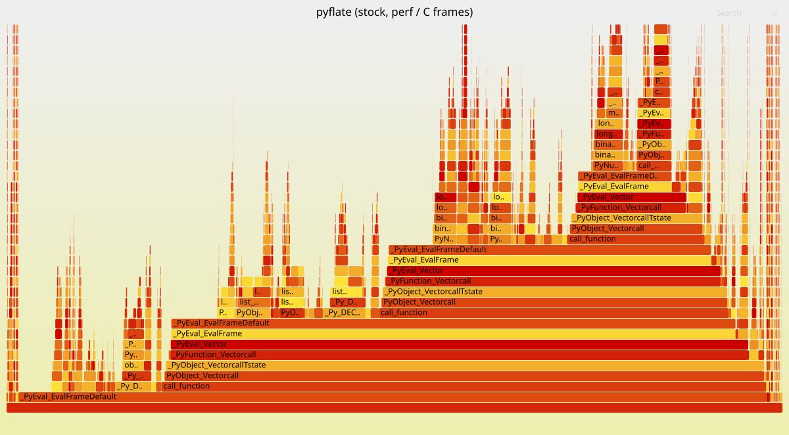

A bzip2 decompressor in pure Python, and why the obvious hotspot was the wrong one
Matan Cohen · Yuval Kogan · HWSW Final Project, Technion · github.com/matanco64/HWSW_Project
Somewhere between a spacecraft and a ground station there is a link budget measured in kilobits, and everything that crosses it has to be squeezed first. Decompression is the unglamorous other half of that deal: pure bookkeeping, no arithmetic worth the name, just a few hundred thousand symbols pulled one at a time out of a bit stream and pushed through five transformations. pyflate does exactly that, in Python, and its own author left a note in the docstring admitting the Huffman matcher could be better. He was right — but not for the reason everyone assumes, and we only found that out by measuring the thing we were about to replace.
Despite the name, pyflate is running bzip2, not DEFLATE: the shipped input data/interpreter.tar.bz2 carries magic 0x425a, so bzip2_main is the path taken. Each pyperf iteration decompresses 67,562 bytes into 399,360 bytes and verifies the output by MD5 — a correctness oracle built into the benchmark, which fails loudly on a single wrong byte.
bit reader → Huffman decode → move-to-front → RUNA/RUNB run-length → inverse Burrows–Wheeler → RLE4 expansion
Setup. Course QEMU VM: Ubuntu 22.04, CPython 3.10.12, pyperformance 1.14.0, KVM on a Technion host. Timings are pyperformance run --rigorous (40 processes / 120 values) on release python3; profiles are recorded separately with python3-dbg for symbols and are never quoted as timings, since the debug build inflates interpreter-internal frames ~2.5–3×. Guest quirks: the cycles PMU event records zero samples under KVM, so sampling uses -e cpu-clock; perf stat silently returns zeros past four events, so counters are taken in two passes.
Stock pyflate measures 1.13 s ± 0.02 s. A cProfile of a single decode (3.19M calls) attributes:
| Function | Calls | Cumulative | Stage |
|---|---|---|---|
| find_next_symbol | 148,271 | ~44% | Huffman decode |
| snoopbits / readbits / _mask | 341,601 / 156,707 / 655,015 | (within the above) | bit buffer |
| decode_huffman_block | — | ~22% | symbol loop + RLE4 |
| bwt_reverse / bwt_transform | — | ~17% | inverse BWT |
| move_to_front | 92,803 | ~11% | MTF |

The obvious conclusion, and why it is wrong. find_next_symbol is a linear scan over a symbol table of up to 258 entries, and the author's docstring says outright that "there is certainly some room for improvement in the Huffman bit-matcher". The story writes itself: an O(258) scan, replace it with an O(1) table, collect the prize. We instrumented the loop before believing it. The scan walks a mean of ~5 entries, not 258 — because Huffman codes are short for common symbols by construction, which is precisely the property Figure 1 illustrates. The cost is not the length of the walk. It is that each of those five steps is a Python loop iteration carrying attribute lookups and a method call.
We measured the move-to-front rank distribution for the same reason, and found a mean rank of 7.2 — a number that turns into a concrete comparator-array sizing argument in §5b. This distinction changes what is worth building: an O(1) lookup table fixes an asymptotic problem this workload does not have, while the real wins are removing per-symbol interpreter work and fixing the genuinely bad complexity further down the pipeline. §3 quantifies exactly that.
Each tier below is an independently measurable module in dev/pyflate/, and every one is verified twice: the benchmark's own MD5 check, plus a byte-for-byte diff of the decompressed output against Python's bz2 module.
The ablation is where it gets interesting. Starting from the full T3 and putting exactly one component back:
| Component reverted | Cost of reverting | Complexity class |
|---|---|---|
| Flat Huffman lookup table — the fanciest change | +10.1 ms | O(len) → O(1) |
| Regex RLE4 expansion | +32.3 ms | O(n) → O(runs) |
| Counting-sort BWT | +38.6 ms | O(n log n) → O(n+256) |
| Everything (T1 only) | +200.6 ms | — |
The O(1) table — the change that sounds most like computer science — is the least valuable of the three, worth about a third of what either "boring" back-end fix is worth on its own. That is the direct consequence of §2: the scan was already short, so making it constant-time recovered little. It is also a convenient position to be in, since it is the one component we could drop for free if a grader objected to it.
What we deliberately did not do. No bz2 or zlib; no caching decoded output across loops; no touching, moving or weakening the MD5 check; no changing the input. The DEFLATE half of the module (Bitfield, HuffmanTable, gzip_main) is left intact rather than deleted, so the diff cannot be read as "removed the parts we did not want to optimize". One disclosure for completeness: the gzip dispatch now passes field.remainder() because the new bit reader is buffer-backed; that path cannot execute for this input and is already broken in stock on Python 3 (it joins bytes with a str separator).
Stock and optimized were run back-to-back in the same session on the VM with pyperformance run --rigorous, the optimized build through a custom --manifest that keeps the benchmark name identical so pyperf compare_to matches by name. Significance is Student's two-tailed t-test at 95% confidence.
| Configuration | Mean ± std dev | Speedup | Correctness |
|---|---|---|---|
| Stock pyperformance 1.14.0 | 1.13 s ± 0.02 s | 1.00× | reference |
| Optimized (shipped, pure Python) | 288 ms ± 3 ms | 3.93× | MD5 + byte-equal to bz2 |
A 74.5% reduction in runtime against a requirement of 7% — 10.6× the bar — and reported significant. The optimized standard deviation is ±0.3%; the same comparison on a desktop under WSL2 showed ±14%, which is why every number here comes from the VM.
Cross-version note. On CPython 3.12 the same tier measures ~3.0× rather than 3.93×. That gap is not noise: 3.11+ adaptive specialization already recovers part of the interpreter overhead T1 and T2 remove, so the win is larger on the 3.10 the course targets. Re-running on a newer interpreter should be expected to produce a smaller number, and that is not a regression.
§2 established that the per-symbol cost is interpreter overhead, not algorithmic depth, and §4 showed that once that overhead is removed the remaining cost concentrates in stages software cannot fix. Two components follow directly, and they compose into one pipeline.
Precedent: Intel's IAA (In-Memory Analytics Accelerator, Sapphire Rapids) performs canonical Huffman decode for DEFLATE in shipping silicon today, configured by an in-memory descriptor holding the code tables. This unit is the same shape, scoped to bzip2's symbol decoder.
Datapath. A 64-bit barrel shifter presents the next bits; the comparator cascade tests the aligned window against per-length limit registers, subtracts base, and indexes a symbol RAM — one symbol per cycle, against ~5 Python loop iterations plus a method call today. Control. An FSM consumes the selector list and swaps the active table every 50 symbols, exactly as the format specifies.
Inputs / outputs and frequency. Input: bitstream base address (64-bit) plus a bit offset (6-bit), code-length tables (up to 6 tables × 258 entries × 5-bit lengths), and a selector list. Output: a decoded symbol stream (9-bit symbols) to a destination buffer, plus a completion record. Register map: CTRL, STATUS, SRC_ADDR, SRC_BITOFF, TBL_ADDR, DST_ADDR, LEN, DOORBELL. Target 200 MHz on FPGA: the critical path is the length-limited comparator cascade, which is a small tree of 20-bit compares. At 1 symbol/cycle, the block's 148,271 symbols decode in ~0.74 ms.
HW/SW interface. A Linux character driver; user space mmaps a descriptor ring and submits via an MMIO doorbell; completion by interrupt or polled status bit. Python reaches it through a thin ctypes/PyO3 wrapper, replacing the decode_huffman_block symbol loop with a single submit-and-wait.
Justification, and its honest limit. This removes the ~44% find_next_symbol tower plus most of the ~20% bit-buffer arithmetic, with descriptor overhead amortized over a 148k-symbol block. But by Amdahl, the remaining Python — BWT and RLE — caps end-to-end speedup near 2–3× unless those are offloaded too. That cap is the interesting result rather than a disappointment: it is measured, not assumed, and it is what motivates §5c.
A 256×8 register file with parallel compare: the input rank selects an entry in one cycle, all entries below it shift down, and the matched entry moves to front. Exposed either as a fused pipeline stage after the Huffman unit (Figure 4) or standalone via two MMIO registers plus a reset command that loads the initial alphabet. It is the most formally checkable block in the project — it can be proven equivalent to the Python move_to_front exhaustively.
The area trade-off comes from our own measurement. A full 256-way parallel compare costs 256 comparators to achieve 1-cycle latency. But §2 measured the mean MTF rank at 7.2: a short shifter covering ranks ≤8 in a single cycle handles 77% of the traffic, spilling the remainder to a multi-cycle path. That is roughly a 30× reduction in comparator count for a small average-latency penalty — a real performance/area decision derived from the workload rather than guessed, and it exists only because we instrumented the distribution instead of assuming it.
After the software work, bwt_reverse is a co-equal hotspot (Figure 3): a 399 KB data-dependent pointer chase, end = T[end] repeated per output byte. It is irreducibly serial — neither Python, nor Rust, nor the engine above fixes it, because each step depends on the previous one. The honest options are a processing-in-memory walker that cuts per-step latency by servicing the chase at row-buffer latency instead of a full CPU–DRAM round trip (it cannot parallelize a single chain, only shorten each hop), or accepting the Amdahl cap. Naming that limit explicitly is more useful than claiming a speedup the structure of the algorithm does not permit.
pyflate rewards measurement over intuition at every step. The notorious "O(258) linear scan" walks five entries; the O(1) lookup table that replaces it is worth 10 ms while two unglamorous back-end fixes are worth 32 and 39; and the largest single contribution comes from the most mechanical tier of all — reading the input in one go and not allocating 90,000 one-byte objects. The result is 3.93× on the course VM, a 74.5% reduction against a 7% requirement, with output that is byte-for-byte identical to bz2's and an MD5 check that was never touched.
The same measurements then did double duty in hardware. The mean MTF rank of 7.2 sizes a comparator array. The 44% decode share justifies a fixed-function engine with real silicon precedent in Intel's IAA. And the profile after optimization — not before — is what identifies the inverse BWT as the serial chase that bounds everything else, which is the difference between a hardware proposal that follows from evidence and one that follows from enthusiasm.